MyFitnessPal: receptes a diari
MyFitnessPal
Versió 21.22.0

-
-

-

-

-

-
FUNCIONALITATS
MyFitnessPal es una aplicació per a telèfons IOS i Android que serveix per perdre o guanyar pes. També te un lloc web on es fan seguiments de la dieta i l'exercici.
Aquesta app s’encarrega de calcular les calories, i depenent l’objectiu que tinguis, de perdre o gunayar pes, l’aplicació automàticament ja et fa el programa de les calories que hauries d’arribar per aconseguir l’objectiu a la teva mida.
FINANÇAMENT
- Subscripcions
- Publicitat
- Socis
COMPANYIA
Francisco Partners, l’actual propietari de MyFitnessPal, es un capital privat que es dedica a fer inversions en empreses de serveis tecnològics. Va comprar l’aplicació MyFitnessPal a Under Armour l’any passat per 475 milions de dòlars.
Va ser fundada l'agost de 1999 a San Francisco amb oficines a Londres i Nova York.
ALTERNATIVES
Les principals alternatives de myfitnesspal són les aplicacions:
Lifesum, FatSecret y OpenFoodFacts, aplicacions que s’utilitzen pel mateix, calcular les calories per perdre o guanyar pes.
AVANTATGES
- Es una aplicació molt intuitiva
- Te la millor base de dades d'aliments
- Es compatible amb moltes aplicacions i dispositius
- Excel·lents controls d'entrada
- No falla mai, no colapsa